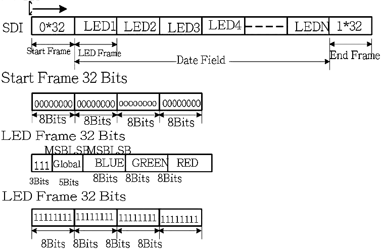

APA102 with an MSP430
The APA102 LEDs are pretty easy to use. I recently hooked up a strip to an MSP430 and found the LEDs to be quite fun to play around with.
The APA102
Each LED comes with an integrated controller that takes data in through two pin SPI (just the clock and data pins). These LEDs can cascaded to produce a strip of LEDs that can be controlled individually. Each LED relays what it sees on its SPI pins to the next LED half a clock later, so controlling the LEDs is almost like controlling a large shift register.
Compared to the WS2812, another common LED for LED strips, the APA102 has no waiting period as part of its data frame and is almost PWM flicker free. The APA102 also uses a two wire interface, so you can drive it at any frequency you want.

There are two models of the APA102, the APA102 and APA102C, but there isn't much of a difference between them. The more expensive APA102 is slightly brighter with a lower operating temperature than the APA102. Both models use the same SPI interface. I have the APA102C on hand, so any pictures shown here are of the APA102C. Here are the datasheets for the APA102 and the APA102C.

The datasheet describes a SPI frame that's fairly straight forward
- 4 bytes of 0x00 as a start frame.
- A brightness byte (0xE0 + value), a blue value byte, a green value byte, and a red value byte.
- (N/2)/8 bytes of 0xFF as an end frame, where N is the number of LEDs.
{kind=link}

Figure 3. APA102 SPI frame specificationThe end frame exists because the APA102 delays the data going through a LED by half a cycle [1]. Extra clocks are needed to shift the data all the way through the cascade. What the datasheet does not tell you is that the 32 bits at the end are not adequate for strips longer than 64 LEDs. The end frame needs at least N/2 bits of 1, where N is the number of LEDs in the cascade.
Controlling the APA102 with an MSP430
It's as simple as just setting up SPI and then sending the proper frame. I used the MSP430F5529, so all the registers settings I show will be for that device. The following code sets up the SPI module with a SMCLK reference.
// Config SPI Pins P2SEL |= BIT7; // CLK on P2.7 P3SEL |= BIT3; // MOSI on P3.3 // Config SPI Registers UCA0CTL1 = UCSWRST; // DISABLE SPI UCA0CTL0 |= UCCKPH | UCMSB | UCMST | UCSYNC; UCA0CTL1 |= UCSSEL_2; // SMCLK UCA0BR0 = 0; UCA0BR1 = 0; UCA0CTL1 &= ~UCSWRST; // ENABLE SPI
I have put my LED driving code into its own .h and .c. I have a table that contains what I would send through SPI, without the start and end frames, in row major order. The assembly is there to provide a simple delay. One can also check for the SPI status register, which takes a long time. A DMA would be appropriate for this application, if speed is a large issue. Here is a bit of my .h header file.
#include <msp430.h>
#include <stdint.h>
// USE GCC
#define SPI_DELAY __asm__("nop\nnop\nnop\nnop")
//#define SPI_DELAY while(UCA0STAT & UCBUSY);
#define SPI_TX UCA0TXBUF
#define NUM_LED 48*5
#define TABLE_SIZE NUM_LED*4
void put_data(uint8_t* led_table, uint16_t num_led);
The led_table is an array of 8 bit types. It is the brightness, blue value, green value, and red value for each LED laid out in row major order. The data for the first LED starts at led_table[0], while the second LED starts at led_table[4]. led_table[4+1] would be the location of the blue value for the second LED.
uint8_t led_table[TABLE_SIZE]; // [ 0x0E + Brightness | B | G | R ]
After configuring SPI and the table of data, push the frame and data into the SPI TX buffer. Note that I send (num_led/16 + 1) bytes as the end frame, which is the number of bytes for (N/2) bits with an extra byte to "round up." Here is a bit of my .c file.
#include "led_drive.h"
void put_data(uint8_t* led_table, uint16_t num_led)
{
uint16_t half_led = num_led/16 + 1; // compute end frame length
uint16_t max_index = num_led * 4; // maximum led_table row index;
uint16_t index; // row major order in led_table
// Start Frame
SPI_DELAY; //while(UCA0STAT & UCBUSY);
SPI_TX = 0;
SPI_DELAY;
SPI_TX = 0;
SPI_DELAY;
SPI_TX = 0;
SPI_DELAY;
SPI_TX = 0;
// LED Frame
for(index=0; index<max_index; index+=4)
{
SPI_DELAY;
SPI_TX = led_table[index]; // Brightness
SPI_DELAY;
SPI_TX = led_table[index+1]; // B
SPI_DELAY;
SPI_TX = led_table[index+2]; // G
SPI_DELAY;
SPI_TX = led_table[index+3]; // R
} // for all leds
// End Frame
for(index=0; index<half_led; index++)
{
SPI_DELAY;
SPI_TX = 0xFF;
} // for end frame
} // put_data()
Here is are examples of manipulating the led_table. randomize() sets every LED the same random color at a brightness of 5. random_shift() shifts all the LED colors down, where the next LED takes the color of the current LED, and then sets the first LED to a random color. Calling put_data() after these function would push the data in the led_table to the LEDs.
void randomize(uint8_t* led_table, uint16_t num_led)
{
uint16_t i, index;
uint8_t r,g,b;
r = rand();
g = rand();
b = rand();
for(i=0;i<num_led;i++)
{
index = i<<2;
led_table[index] = 0xE0 | 5;
led_table[index+1] = b;
led_table[index+2] = g;
led_table[index+3] = r;
}
} // randomize()
void random_shift(uint8_t* led_table, uint16_t num_led)
{
uint16_t i, index, indexx;
uint8_t r,g,b;
r = rand();
g = rand();
b = rand();
for(i=num_led-1; i>0; i--)
{
index = i<<2;
indexx = (i-1)<<2;
led_table[index] = led_table[indexx];
led_table[index+1] = led_table[indexx+1];
led_table[index+2] = led_table[indexx+2];
led_table[index+3] = led_table[indexx+3];
}
led_table[0] = 0xE0 | 5;
led_table[1] = b;
led_table[2] = g;
led_table[3] = r;
} // random_shift()